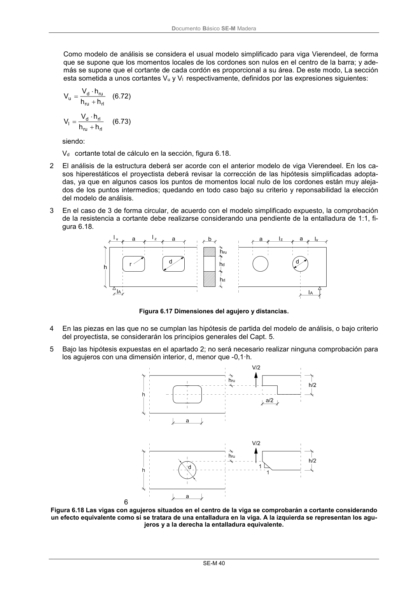

DB-SE-M Madera · edición 2019-12-20 · capa oficial
Documento DB-SE-M-oficial · SHA-256 del PDF 26b5819839ebfda78b0b119c5e76a0a37773b0d763c05688541870075df93718
Copia fiel del PDF fuente · Fuente oficial
Ficha de la disposición en la fuente oficial
Formatos: JSON del segmento · Markdown
6.6 Piezas con agujeros 1 La comprobación de la resistencia a cortante de una pieza con agujeros como los indicados en la figura 6.17, y bajo las condiciones siguientes: lv ≥ h lz ≥ max (h, 300 mm) lA ≥ h/2 hru ≥ 0,25·h hrl ≥ 0,25·h a ≤ h hd ≤ 0,4·h r ≥ 15 mm se basa en la comprobación una viga equivalente con una entalladura según se ilustra en la figura 6.18 y utilizando el método de comprobación expuesto en el apartado 6.5.2. DocumentoBásico SE-M Madera SE-M 40 Como modelo de análisis se considera el usual modelo simplificado para viga Vierendeel, de forma que se supone que los momentos locales de los cordones son nulos en el centro de la barra; y ade- más se supone que el cortante de cada cordón es proporcional a su área. De este modo, La sección esta sometida a unos cortantes Vu y Vl respectivamente, definidos por las expresiones siguientes: rl ru ru d u h h h V V (6.72) rl ru rl d l h h h V V (6.73) siendo: Vd cortante total de cálculo en la sección, figura 6.18. 2 El análisis de la estructura deberá ser acorde con el anterior modelo de viga Vierendeel. En los ca- sos hiperestáticos el proyectista deberá revisar la corrección de las hipótesis simplificadas adopta- das, ya que en algunos casos los puntos de momentos local nulo de los cordones están muy aleja- dos de los puntos intermedios; quedando en todo caso bajo su criterio y reponsabilidad la elección del modelo de análisis. 3 En el caso de 3 de forma circular, de acuerdo con el modelo simplificado expuesto, la comprobación de la resistencia a cortante debe realizarse considerando una pendiente de la entalladura de 1:1, fi- gura 6.18. Figura 6.17 Dimensiones del agujero y distancias. 4 En las piezas en las que no se cumplan las hipótesis de partida del modelo de análisis, o bajo criterio del proyectista, se considerarán los principios generales del Capt. 5. 5 Bajo las hipótesis expuestas en el apartado 2; no será necesario realizar ninguna comprobación para los agujeros con una dimensión interior, d, menor que -0,1·h. 6 Figura 6.18 Las vigas con agujeros situados en el centro de la viga se comprobarán a cortante considerando un efecto equivalente como si se tratara de una entalladura en la viga. A la izquierda se representan los agu- jeros y a la derecha la entalladura equivalente. DocumentoBásico SE-M Madera SE-M 41
